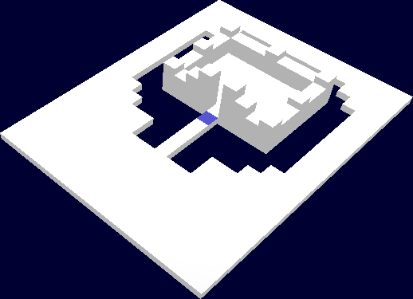
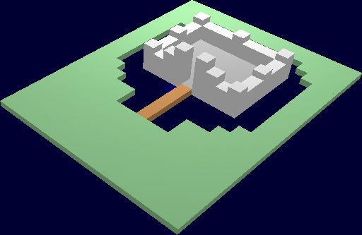
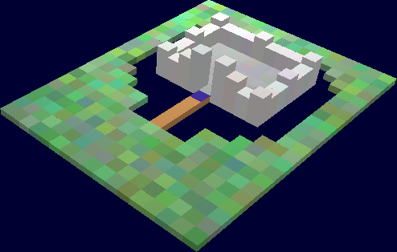

GalaxyMage.py -m castle-1Each map file is actually written in the Python language, which is just done for convenience (it makes loading the maps a snap). So it might help to get a text editor that supports Python syntax highlighting, as it will be easier to notice if you make some sort of error.
This document walks you through the process of building a map from the
ground up -- starting by specifying tile heights, then adding colors,
textures, and so on. We'll be using the files
data/demo/maps/castle*.py as examples. It would be best
if you open up these files (in your text editor) when we mention them,
so that you can follow along more easily.
# MAP DATA # Version of the map file format VERSION = 1 # Width and height of the map WIDTH = 17 HEIGHT = 22 # Layout of map tiles LAYOUT = ''' 4 4 4 4 4 4 4 4 4 4 4 4 4 4 4 4 4 4 4 4 4 4 4 4 4 4 4 4 4 4 4 4 4 4 4 4 4 4 0 0 0 0 0 0 0 0 0 4 4 4 4 4 4 4 0 0 0 0 0 0 0 0 0 0 0 4 4 4 4 4 0 0 18 14 14 14 18 14 14 14 18 0 0 4 4 4 4 0 0 14 4 4 4 4 4 4 4 14 0 0 4 4 4 4 0 0 14 4 4 4 4 4 4 4 14 0 0 4 4 4 4 0 0 18 4 4 4 4 4 4 4 18 0 0 4 4 4 4 0 0 14 4 4 4 4 4 4 4 14 0 0 4 4 4 4 0 0 14 4 4 4 4 4 4 4 14 0 0 4 4 4 4 0 0 18 14 20 26 4 26 20 14 18 0 0 4 4 4 4 0 0 0 0 0 0 4 0 0 0 0 0 0 4 4 4 4 4 0 0 0 0 0 4 0 0 0 0 0 4 4 4 4 4 4 4 0 0 0 0 4 0 0 0 0 4 4 4 4 4 4 4 4 4 4 0 0 4 0 0 4 4 4 4 4 4 4 4 4 4 4 4 0 0 4 0 0 4 4 4 4 4 4 4 4 4 4 4 4 4 4 4 4 4 4 4 4 4 4 4 4 4 4 4 4 4 4 4 4 4 4 4 4 4 4 4 4 4 4 4 4 4 4 4 4 4 4 4 4 4 4 4 4 4 4 4 4 4 4 4 4 4 4 4 4 4 4 4 4 4 4 4 4 4 4 4 4 4 4 4 4 4 4 4 4 4 4 4 4 4 4 4 4 4 4 4 4 4 4 4 4 4 4 4 4 '''This is the minimum that a map file can have. Here's some more details:
If you run this map with GalaxyMage.py -m castle-1,
you'll see what it looks like: a flat field with a castle in the
middle (and a little void for a moat).

But it's a pretty boring map; everything is white. So let's spruce it up a bit so that it looks much nicer.
# Tile properties
TILE_PROPERTIES = {
'w': { 'color': (0.8, 0.8, 0.8, 1.0) },
'g': { 'color': (0.6, 0.6, 0.6, 1.0) },
't': { 'color': (0.7, 0.5, 0.3, 1.0) },
'': { 'color': (0.5, 0.7, 0.5, 1.0) },
}
You'll also notice that some of the tiles in the LAYOUT section have
letters after the numbers, like this:
14w 4g 4g 4g 4g 4g 4g 4g 14wThis letter is a "tag" that tells the map loader which properties to apply to the tile. It reads these properties out of the TILE_PROPERTIES section. For instance, anything tagged with the letter "w" will have a color (0.8, 0.8, 0.8, 1.0) -- basically, a white color. Likewise, the "g" tag creates a grey tile and the "t" tag creates a tan tile. Anything that doesn't have a tag gets a default value from the last line -- the one that starts with '': . It turns out that this is a green color.
A word about colors: the 4 values there are (red, green, blue, alpha), all in the range 0.0 to 1.0. You should always set alpha to 1.0 for now. Eventually this value might let you define translucent map tiles, but for now it's not implemented correctly (and probably won't be for a while, if ever.)
Though all the tags in this example are single characters, you can use strings of multiple characters if you want. This might become more useful when you get to more complicated maps.
Go ahead and run this map and see what it looks like.

TILE_PROPERTIES = {
'w': { 'color': (0.8, 0.8, 0.8, 1.0),
'colorVar': (0.05, 0.05, 0.05, 0.0) },
'g': { 'color': (0.6, 0.6, 0.6, 1.0),
'colorVar': (0.05, 0.05, 0.05, 0.0) },
't': { 'color': (0.7, 0.5, 0.3, 1.0) },
'': { 'color': (0.5, 0.7, 0.5, 1.0),
'colorVar': (0.2, 0.2, 0.2, 0.0) },
}
This adds some random variation to the colors of the tiles that have
that tag. Basically, each color component has a random amount
subtracted from the value specified in 'color'. So for our example,
the tiles tagged with "g" will now have color values randomly selected
from the range (0.55 - 0.6). The colorVar is set to 0.2 for the
default (green) tiles, so their color will vary a lot more than the
castle tiles. Note also that we didn't add a 'colorVar' property to
the 't' tag, so tiles tagged with 't' will have no variance.

TILE_PROPERTIES = {
'w': { 'color': (0.8, 0.8, 0.8, 1.0),
'colorVar': (0.05, 0.05, 0.05, 0.0),
'texture': 'stone' },
'g': { 'color': (0.6, 0.6, 0.6, 1.0),
'colorVar': (0.05, 0.05, 0.05, 0.0),
'texture': 'marble-slight' },
't': { 'color': (0.7, 0.5, 0.3, 1.0),
'texture': 'wood' },
'': { 'color': (0.5, 0.7, 0.5, 1.0),
'colorVar': (0.2, 0.2, 0.2, 0.0),
'texture': 'grass' },
}
These textures are loaded from the data/*/textures directories. Each
file is a 128x128 PNG image. Feel free to make your own textures and
use them in your maps. It's recommended, but not required, that you
make textures in grayscale - that way you can add them to a map tile
of any color without it looking too weird. Otherwise, the map tile
will get some of its color from the texture that is applied to it.

castle.py also shows how you can define constants, like
white = (0.8, 0.8, 0.8, 1.0)This makes the map file slightly easier to read. More importantly, if you define and use the
white constant for all your white
tiles, you can adjust the color in just one place and have that change
automatically applied to all white tiles.